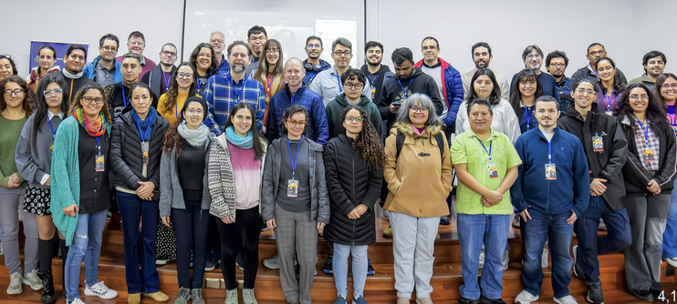
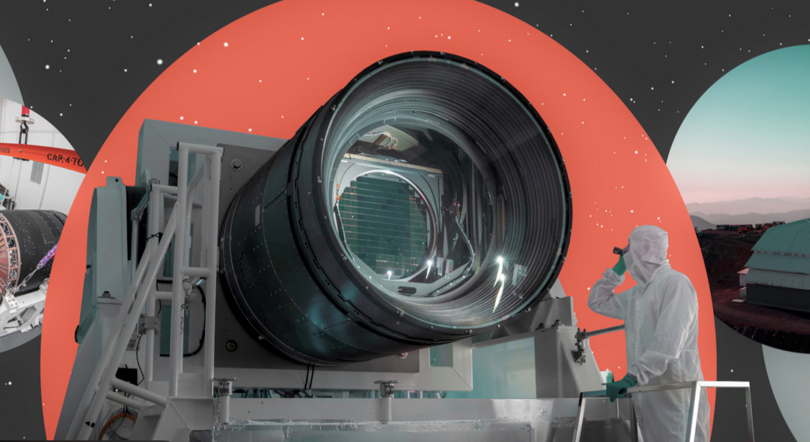
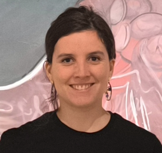
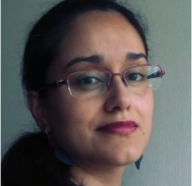
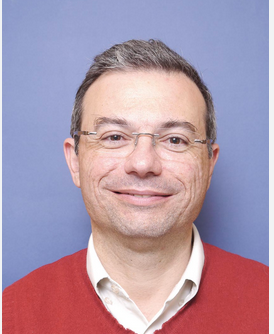
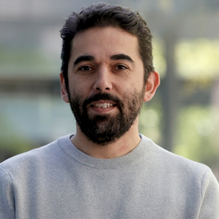

Rubin Users Committee
- Alejandra Muñoz — Chile representative (CMM, Universidad de Chile)
The Rubin Observatory will conduct a 10-year survey of the southern sky, known as the Legacy Survey of Space and Time (LSST). This webpage provides important information for scientists and for media regarding the Chilean participation in the Legacy Survey of Space and Time (LSST).

The LSST@LATAM 2026 is the 3rd Latin American meeting dedicated to the Vera Rubin Legacy Survey of Space and Time (LSST). The event aims at bringing together Latin American professionals already involved in LSST, with data rights, as well as researchers interested in integrating scientific collaborations through the exploration of alert streams, which are accessed via alert brokers that do not require data rights. This is the third edition of a series of events, the previous ones having been LSST@LATAM 2024 and LSST@LATAM 2025.

The Early Science Program is defined as the science enabled before the first annual LSST data release (DR1). It includes a sequence of Data Previews (reprocessed commissioning datasets), a progressive ramp-up of the alert stream and Prompt Products. In the Data Preview timeline: DP0 (simulated) and DP1 (from LSSTComCam) are available now; DP2 is planned for Jul–Sep 2026 and will be based on LSSTCam data with a product set similar to DP1.
The Chilean committee is responsible of communicating all important information regarding the Vera C. Rubin Observatory and LSST to the Chilean community. It includes coordination with the Rubin Users Committee and the Rubin Implementation Committee

National Scientific Coordination Committee Chair.
Universidad de Valparaíso

Chile representative Rubin Users Committee.
CMM, Universidad de Chile
Representative LSSTC Board
Universidad Católica de la Santísima Concepción

Science Advisory Committee
Pontificia Universidad Católica de Chile

Science Advisory Committee
Universidad de Chile
Committees and Chilean representatives involved in Rubin Observatory/LSST community coordination.
Phasellus convallis elit id ullamcorper pulvinar. Duis aliquam turpis mauris, eu ultricies erat malesuada quis. Aliquam dapibus, lacus eget hendrerit bibendum, urna est aliquam sem, sit amet imperdiet est velit quis lorem.